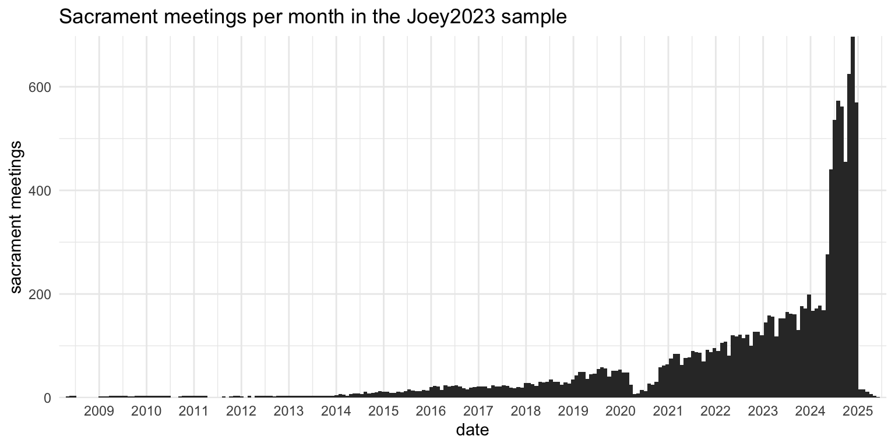
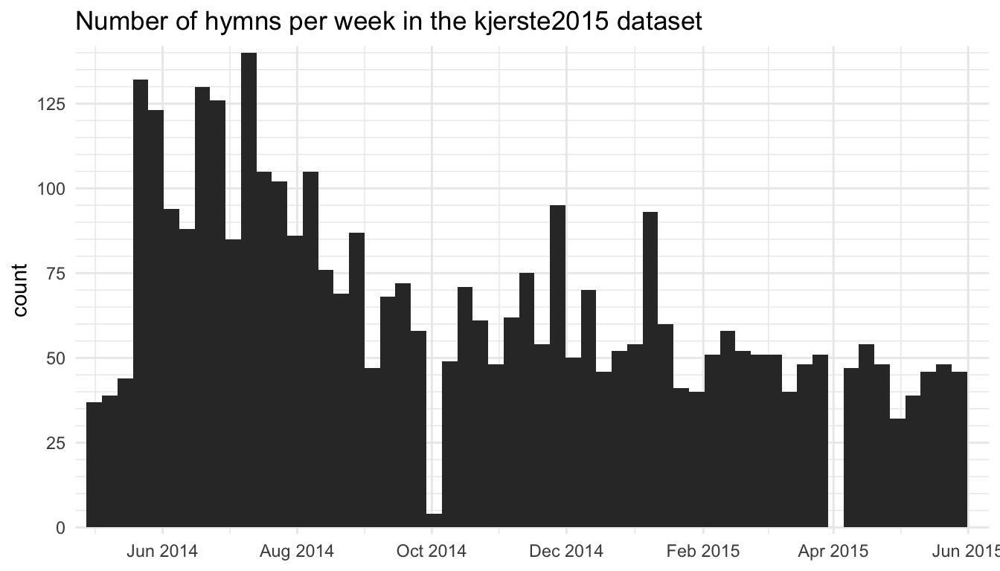
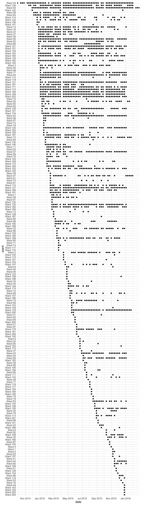

| Frequency data, by source | ||||||
| source | wards | sacrament meetings | hymns | |||
|---|---|---|---|---|---|---|
| n | % | n | % | n | % | |
| joey2015 | 21 | 2.03% | 2,042 | 10.6% | 7,006 | 10.5% |
| joey2023 | 50 | 4.82% | 3,446 | 17.9% | 11,223 | 16.8% |
| kjerste2015 | 60 | 5.79% | 403 | 2.1% | 3,759 | 5.6% |
| samuel2015 | 214 | 20.64% | 2,328 | 12.1% | 7,805 | 11.7% |
| samuel2017 | 692 | 66.73% | 11,068 | 57.4% | 37,068 | 55.4% |
| Reflects the dataset as of November 16, 2023. It will likely update in the next few weeks. | ||||||
How much data do I have and where did it all come from?
meta
In this post, I’ll explain a bit more about the data itself. You’re not going to see any interesting findings about hymn stats here; instead, this page will be mostly to satisfy people that are curious about the project itself. How much data do I have? Where did it all come from? What is the nature of the data?
For this project, I have two main datasets. One is the Frequency data, which I use to answer questions like, “What is the most common hymn?”, “What hymns are hardly ever sung?” or “What hymns are popular around Valentine’s Day?”. The other is the Notes data, which I use to answer questions like, “What is the highest alto note?” or “What is the widest range a single part has to sing?”, or “What is the most common final chord?”. I’ll explain just the Frequency data in this blog post and will save the Notes data for a future post.
The dataset I’m calling the Frequency data is which is collected by having people in other wards and branches submit to me what hymns they sing in sacrament meeting. I use it to answer questions about how common or uncommon a hymn is or anything about annual trends. Let’s dive into this dataset a little bit.
Where did the data come from?
The data presented in this project comes from about five different sources. Table 1 shows these five projects and how much data they’ve contributed to the overall dataset, in terms of number of wards, number of sacrament meetings, and number of hymns overall.
Let me go through each one individually.
Joey’s 2015 collection
I first began this project sometime around 2013. I had the idea to collect as much data as I could from as many wards as I could to answer the question of what hymn is most common and what hymns are the least common.
In my project planning phase, I considered setting up a survey that people could quickly take every week to report their hymns. However, I didn’t think I could get very many people to commit to that kind of consistency. So, I decided that rather than collecting hymns from the next 52 weeks, what if I collected hymns from the past 52 weeks? I figure many wards have a spreadsheet of some sort that they use to keep track of hymns. If not a spreadsheet, then at least copies of old sacrament meeting programs, or notes that the Bishopric uses when conducting. All I’d need then is for someone from each ward to send me their data once, rather than many times.
So I started asking around in online spaces where LDS music people might gather, but I soon found out it was going to be harder than I expected to get people to send me their data. After a few weeks I was able to get data from 21 wards, ranging from a few months to several years. My own ward’s clerk was cleaning out old files and found years of sacrament meeting programs, and sent them to me. Because this data collection happened through 2015. I call this chunk of the overall sample the Joey2015 data.
Table 1 shows that I collected data from 2,042 sacrament meetings from 21 wards. So, not too many wards, but I did get a fair amount of data from each one. However, the issue I ran across was that the characteristics of any one ward would sometimes overwhelm the overall findings because there were so few wards in total. For example, a ward that sent several years’ worth of data had two quirks: they would systematically cycle through all the sacrament hymns, and they would sing
Figure 1 shows how this Joey2015 sample is distributed over time. In this plot, the height of each bar represents how many sacrament meetings I had data from within each month. You can tell that most of the recruitment efforts were done in 2014 since that’s when the most data comes from. There’s a recency effect here: if I put a call out to people in June 2014, I’ll get a lot of data from the weeks and months leading up to June 2014, and less data the further back I go because fewer wards keep records for that long.

Joey’s 2023 collection
My interest in the project waned after about 2017, partly because I was in graduate school and was starting a family, and partly because I was having a hard time collecting more data. In 2023 though, my interest was revitalized, coincidentally right before the church announced the new hymnal. I figured since I had been working on this for over a decade and since I’ve collected so much data, I might as well get the results out before it all becomes irrelevant. It’s probably too late to send these findings to the church in case they want to use them to help make decisions about the new hymnal.
As I began this blog, I started sharing it and results from it in new online spaces, primarily social media. As I do so, I encourage people to send me their data if they have it. Through these efforts, I actually collected more data than I had in 2015. More wards, more sacrament meetings, and more hymns.
Figure 2 shows the distribution of dates over time for the joey2023 sample. There are two interesting things to note. One, is there’s a large dip in 2020 because of covid. Through the many spreadsheets I’ve been sent, it’s been interesting to see how and when wards returned back to normal meetings. The other major thing is that there’s a general increase in time and the recency efect is quite visible. As I continue advertising the project, more and more people send stuff to me. But, I have gotten some data from as far back as 2009, which is pretty cool. At the time of writing though I have nothing for 2024, which is just 9 days away!
Warning: Removed 1 rows containing non-finite values (`stat_bin()`).
Kjerste’s 2015 survey
Around the same time I was beginning my project, but completely independently of me, another hymn stats fan, Kjerste Christensen, began her own project. She ran a weekly hymn survey for a little over a year. Her thinking was that it was important to get a full year in order to get all the holiday and seasonal variation (and I agree with that). The project was mainly for her own curiosity and she never did much with it other than use it for personal use like figuring out what hymns would be common to sing in church. I’ll call this dataset the kjerste2015 collection.
On average, Kjerste had roughly 20 people per week fill out her survey. It’s not clear how many wards contributed to the survey total because many people did not include information about their ward, but there were at least 60 and likely 2–3 times that many. Figure 3 shows the distribution of the kjerste2015 data across time.

kjerste2015 datasetSamuel’s 2015 survey
There must have been something going around in 2014–2015 because, coincidentally, just as I was getting interested in my project and just as Kjerste was too, Samuel Bradshaw, yet another curious LDS musician, wanted to collect some data for a hymn stats project. Samuel had the same idea as Kjerste and wanted to get people to fill out a quick survey every week saying what hymns they sang.
Fortunately, Samuel runs SingPraises.net and appears to have many more connections and resources than me and Kjerste. So, he was much more successful in advertising the project and getting people to submit data. Basically, he did was I was not able to do and actually got people to submit week after week. After a year of data collection, Samuel ended up with data from 214 unique wards and 2,328 sacrament meetings, as seen in Table 1. Samuel ended up publishing the results of his survey on his website.
samuel2015 datasetI got my hands on the samuel2015 dataset early on when Samuel and I agreed to share our data.
Samuel’s 2017 survey
After a successful project in 2015, Samuel Bradshaw revamped the survey and distributed it again in 2017. Again, he has more resources, a wider network of musicians, and his SingPraises.net website to help advertise. He put a link to the survey at the top of every page of SingPraises.net, so everyone who visited the site during that year saw it. He created a Google Groups mailing list for people to join and get updates about the project. People got reminder emails sent to them automatically to remind them to fill out the survey and to spread the word. He asked people with music callings to submit their spreadsheets they used for planning their hymns (like what my joey2015 dataset did. He created Spanish and Portuguese versions of the survey to hopefully reach a wider audience. And he followed up with wards if they were missing a few weeks.
Through these efforts, Samuel collected an enormous amount of data: 11,068 sacrament meetings from 692 wards from around the world! He averaged 112 responses every week through 2017. Plus, for a few wards he was able to get a long history of hymns sung: two wards submitted over 14 years’ worth of data! At this point, Samuel already had access to the kjerste2015, joey2015, and of course samuel2015 datasets, so when he published the results on his website, it was by far the largest hymn stats project to date.
Samuel has again graciously agreed to share his data with me for the purposes of this project. At the time of writing, the samuel2017 collection comprises 57% of the total dataset, so his contribution more than doubled the amount of data I have.
Comparing the data collecton methods
I think it’s important to pause and compare the two approaches to data collection. The joey2015 dataset has 2,042 sacrament meetings from 21 wards. The median number of sacrament meetings per ward that that dataset has is 40, and the average is 97. So, a lot of data from a few wards. The samuel2015 collection is a little larger, 2,328 sacrament meetings, but it comes from 214 wards, which is ten times as many. The average number of weeks submitted per ward is 11, and the median is just two. So while many, many more wards are represented, we only get a snapshot of what that ward is like. In the samuel2017 collection, the numbers were the same: the average number of weeks each ward submitted was 11 but the median was still 2. So, though the attrition rate was about the same as in his 2015 survey, just the sheer volume of data that he collected was astounding. The kjerste2015 collection is similar to Samuel’s and has a lot of data from a few wards and a little bit of data from many wards. One method gets depth and the other gets breadth and I think the two methods complement each other nicely.
Figure 5 and Figure 6 illustrate these differences. For both figures, we have time represented on the x-axis, with older dates on the left and newer dates on the right. Along the y axis, we have each ward, anonymized. Wards are arranged from top to bottom based on the oldest date the submitted data from. Each contribution is a single dot on the plot.
joey2015 dataset.Figure 5 above is from the joey2015 data. Again, fewer wards, but many contributions from each ward because I was specifically seeking out spreadsheets that music coordinators were already using. The smallest contribution from a ward was a single week’s worth of data from when I was visiting there. This plot spans over a decade because some wards had many years’ worth of data.
Compare this to Figure 6 below. The plot is organized in the exact same way. Again, ten times as many wards. However, you can see that the vast majority of these wards only contributed one or two weeks’ worth of data. Some did more, but even the most dedicated people had gaps in their submissions (even after Samuel’s dutiful efforts of following up with people).

samuel2015 dataset.These plots only show the joey2015 and the samuel2015 datasets. Since the joey2023 dataset largely follows the same methods as the joey2015 one, it looks the same, just with more wards. The kjerste2015 dataset looks very similar to the samuel2015. The samuel2017 mostly does too, except it’s so much bigger because there is so much data.
I say that these two methods complement each other because they can be used to answer different questions. The sheet number of contributions from so many wards in Samuel’s and Kjerste’s collections means we can see what happens at a macro level. What hymns are the most common, least common, popular around holidays, etc. And since the bulk of the data came from the same year, we get a really nice snapshot of what the church was doing at that time.
However, having data from many years means I can answer other questions that would not be possible no matter how much data is collected from a single year. For example, I’ve shown that people usually sing Thanksgiving hymns the Sunday after Thanksgiving, unless that day falls on December 1st, in which case we get a surge of Christmas hymns, most notably
I was also able to do a pretty cool (but rather technical) analysis (part 1 and part 2) on how many hymns a ward sings and how long it takes for them to level out. It seems like wards sing about 105 unique hymns per year, and average about 3.47 per week. Most wards level out at around 240 hymns, give or take a couple dozen, and it takes about five years to get to that point. This kind of analysis is only possible if you’ve got many wards contributing many years of data.
How much data do I have?
Now that we’ve talked about where this data came from, let’s talk about how much data I actually have. I have pooled the data from all five sources together, cleaned them up, made them compatible with each other, and now have a pretty hefty spreadsheet of hymn stats data, the Frequency data.
How many sacrament meetings?
The Frequency dataset currently has information from 19,285 sacrament meetings. Assuming a rate of one sacrament meeting a year, and 48 meetings a year (52 minus two for ward conference and two for stake conference), it would take a person just over 401.77 years to experience that many congregational hymns. So, this collection represents far more than what any one person can experience in a lifetime.
How many wards?
This data comes from 965 unique wards and branches. We’ll se below that most of that comes from the United States. Specifically, 779 are from the US. At the time of writing, the church reports that there are 14,614 congregations in the United States. That means that this sample has information from 5.33% of the wards in the United States, which is not too shabby. We can certainly thank Samuel Bradshaw for this since only 7% of the all the wards in this sample are from my own data collection efforts.
How many hymns?
The whole spreadsheet has 66,861 rows in it, each representing a congregational hymn sung in some ward or branch sometime in the past 20 years somewhere in the world. Table 2 shows just a snapshot of what the raw dataset looks like under the hood.
| id | ward | type | hymn_num | hymn_name |
|---|---|---|---|---|
| 4115 | Apex Ward | Opening | 57 | We’re Not Ashamed to Own Our Lord |
| 13945 | Ashcroft Ward | Sacrament | 197 | O Savior, Thou Who Wearest a Crown |
| 17741 | Gouda Wijk | Closing | 134 | I Believe in Christ |
| 29089 | Fort Lauderdale 1st Ward | Sacrament | 146 | Gently Raise the Sacred Strain |
| 29887 | Eagle Mountain 2nd Ward | Opening | 249 | Called to Serve |
| 37493 | Pass Branch | Closing | 94 | Come, Ye Thankful People |
| 48410 | Rigby 9th Ward | Sacrament | 172 | In Humility, Our Savior |
| 56259 | Coalville 1st Ward | Opening | 212 | Far, Far Away on Judea’s Plains |
| 64746 | Wills Point Ward | Sacrament | 186 | Again We Meet Around the Board |
| 65391 | Bedford 2nd Ward | Opening | 27 | Praise to the Man |
As you can see, it’s pretty straightforward data. I have columns for the ward name, what I’m calling the “type” (which is just whether it’s the opening, sacrament, intermediate, or closing hymn), the hymn number and the hymn name. The first column, “id”, is simply a unique identifier for each row in the spreadsheet.
For the most part, there are no partial rows in this spreadsheet. However, a few wards have organized their spreadsheets in such a way that I can recover the dates, but not the “type.” For such wards, I have put an NA in the “type” column and they are excluded from any sort of analysis that uses those types. In a few instances, I’m sent data that has partial information about a sacrament meeting, such as just the opening hymn but not the others. In such cases, I toss the data because I only want to include complete sacrament meetings.
Geographic Distribution
For each ward/branch I have a separate spreadsheet that includes basic metadata about them. Table 3 shows that I have the name (for simplicity, I call it “ward” even though branches are included), and the city, state, and country.
| ward | city | state | country |
|---|---|---|---|
| Maple Meadows 1st Ward | Spanish Fork | Utah | United States |
| Spanish Fork 23rd Branch | Spanish Fork | Utah | United States |
| Payson Utah Mountain View Stake | Payson | Utah | United States |
| Westmond Ward | Cocolalla | Idaho | United States |
| Paroisse de Gombe GB | Kinshasa | NULL | Democratic Republic of the Congo |
| Winslow Park Ward | Salt Lake City | Utah | United States |
| Memorial Park Ward | Ogden | Utah | United States |
| Klamath Falls 1st Ward | Klamath Falls | Oregon | United States |
| Centerville Utah Canyon View Stake | Centerville | Utah | United States |
| Stanley Branch | Stanley | Idaho | United States |
Countries
I currently have data from 58 countries, however, 84.57% of the data comes from the United States. A fair amount also comes from Canada, the United Kingdom, and Australia. Table 4 (click to expand) shows the full breakdown of how much data I have from each country, in terms of how many hymns, how many sacrament meetings, and how many wards. So, the US is over-represented in this dataset, compared to how members of the church are distributed around the world. This makes sense given that recruitment efforts were based in the United States and were in English. Therefore, while I can’t say that the patterns here do not represent wards outside of the US, any extrapolation of these patterns to other countries should be taken with a grain of salt.
States and Provinces
Within the United States, I have data from 47 states and the District of Columbia, as seen in Table 5. The only states I don’t have data from are Arkansas, Delaware, and North Dakota. Unsurprisingly, the bulk of the data (40.74%) comes from Utah. Other western states are well-represented, but so are Texas, North Carolina, and Georgia. Georgia is probably so high on this list because I lived there and contributed many years’ worth of data from my own wards. Again, this is not representative of the distribution of church members in the US. Especially for the states that have less data, the influence of a large contribution by a single ward can have an overwhelming influence on the overall results for that state. For that reason, I do very little geographic analysis in this blog.
Since Canada is the second largest country in this dataset, it’s worth a look to see how that data is broken down (Table 6). Only five provinces are represented in this sample, and they definitely don’t reflect the distribution of members there. About half the Canadian data comes from a single contribution of over eight years of data from a ward in New Brunswick. So even though there are many more members in Alberta, that one ward overwhelms the rest of the Canadian sample.
Cities in Utah
Within Utah, we can even break it down by city. Table 7 shows that Provo has the largest representation. A big chunk of these come from YSA and Married Student wards. This again makes sense since much of the recruitment efforts took place in Provo. Spanish Fork is high on the list because that’s where I currently live.
So, at all levels of geography, there are sampling errors, many of them biased towards where the recruitment has happened. There’s not much I can do about that, but it’s still useful to see where the data comes from.
Distribution across time
The oldest datapoint in this sample comes from April 28th, 2002 and, as of writing this on Decmeber 29, 2023, the newest comes from December 31, 2023. So, the data spans over twenty years. Considering I started data collection in 2013, it’s amazing that I have data from 2002 and 2003 at all—amazing that someone held on to those records for so long, that they happened to hear about the project, and that they were willing to contribute it all! If we ignore a few gaps in 2002 and 2003 and the second quarter of 2020 when in-person sacrament meetings were suspended, I have a nearly unbroken line of data spanning two decades.
Of course, like the geographic distribution, the temporal distribution of this dataset, is not even. Figure 7 shows that there is a major spike in data in the mid-2010s. The project started in 2013, so anything from before then is from old spreadsheets that people sent us, and unsurprisingly, the further back you go the less data I have. In 2013 and 2014 it picks up as I began my recruitment efforts. Samuel’s first survey explains the increase in 2015. And his 2017 survey, which began in the second half of 2016, explains the monstrous spike that year. Samuel stopped collecting data in early 2018, and I only recently started getting more in late 2023, so anything from 2018 on is mostly from spreadsheets collected in 2023.

So, like the geographic data, it’s a wide sample, but very highly biased towards when and where data collection was happening. For that reason, I am hesitant to make any claims about changes over time. Especially because the early years are only represented by a few wards.
Conclusion
On this page, I’ve explained where the data came from and how much of it I have. It is a conglomeration of five different projects by three people, all of whom started to get interested in hymn stats around 2014 completely independently of each other. Samuel Bradshaw and Kjerste Christensen’s surveys got data from many wards, while mine got lots of data from a smaller number of wards. There are over 400 years’ worth of sacrament meetings represented in this sample. It mostly comes from the United States, with the bulk of that being from Utah, but many states and countries are represented in this sample.
Hopefully that answers any questions you might have about the data used in this blog. If you would like to contribute your own data, you may certainly do so here!